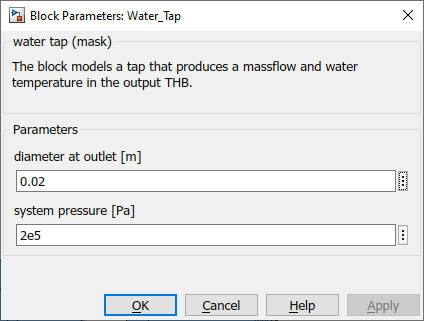

Water_Tap
Path: CARNOT/Load/Hot_Water_Tapping
Purpose:
This block models a water tap.
Description:
The block is a constant pump that sets a constant mass flow rate at a constant
temperature. The massflow at the outlet is set by the input "mdot".
Input:
| mdot | : | mass flow of the water in kg/s |
| Tc | : | cold water temperature in °C |
Output:
| THB | : | Thermo-Hydraulic Bus of the water flow |
Parameters and Dialog Box:

Examples:
Open the example explorer from the Matlab command window
ExampleBrowser
or load the examples via the CARNOT library.
Characteristics:
| Direct Feedthrough | : | Yes |
| Sample Time | : | Inherited from driving block |
| Vectorized | : | No |